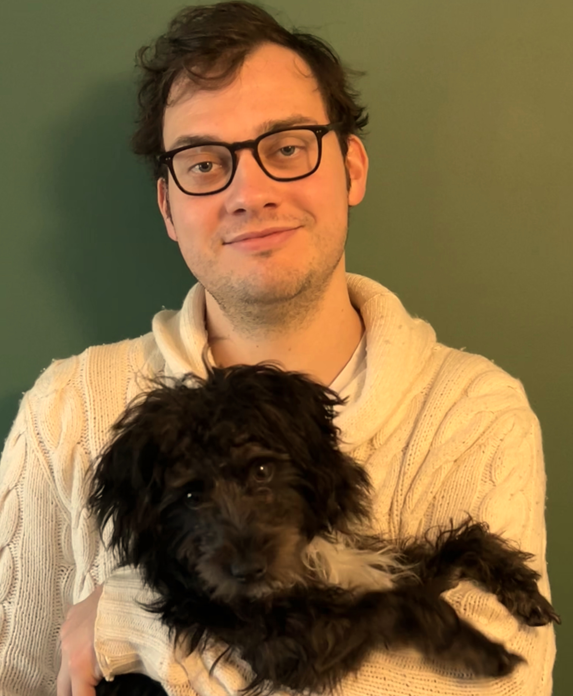

About
This two day Colloquium aims to bring together researchers in discrete mathematics, from structural and algorithmic graph theory to probabilistic and extremal combinatorics.
For the benefit of junior researchers, there is a tutorial given by Maksim Zhukovskii, and a session with contributed one slide pitches by junior researchers.
The Colloquium will be hosted at the University of Liverpool, which is a 15 minute walk from the Liverpool main train station.
Speakers (confirmed so far)

Natalie Behague (Warwick)

Natasha Blitvic (Queen Mary)

James Davies (Cambridge)

John Haslegrave (Lancaster)

Vadim Lozin (Warwick)

Maksim Zhukovskii (Sheffield)
Schedule (tentative)
| Time | Activity |
|---|---|
| First Day | |
| 9:30 - 10:15 | Registration/Coffee |
| 10:15 - 10:30 | Welcome Address |
| 10:30 - 12:30 | First Tutorial - Maksim Zhukovskii |
| 12:30 - 14:00 | Lunch |
| 14:00 - 14:45 | Talk 1 - Sandra Kiefer |
| 14:45 - 15:30 | Talk 2 |
| 15:30 - 16:00 | Coffee Break |
| 16:00 - 16:45 | Talk 3 |
| 16:45 - 17:30 | Talk 4 |
| 17:30-18:00 | 3-minute pitches |
| 19:00 | Dinner |
| Second Day | |
| 9:00 - 9:30 | Coffee |
| 9:30 - 11:30 | Second Tutorial - Maksim Zhukovskii |
| 11:30 - 11:45 | Coffee |
| 11:45 - 12:30 | Open Problem Session |
| 12:30 - 14:00 | Lunch |
| 14:00 - 14:45 | Talk 5 - Natasha Blitvic |
| 14:45 - 15:30 | Talk 6 |
| 15:30 - 16:00 | Coffee Break |
| 16:00 - 16:45 | Talk 7 - Natalie Behague |
| 16:45 - 17:30 | Talk 8 - John Haslegrave |
| 17:30 - | Pub Visit to The Augustus John (3 mins from Department) |
Organisers

John Sylvester

Viktor Zamaraev
Supported by